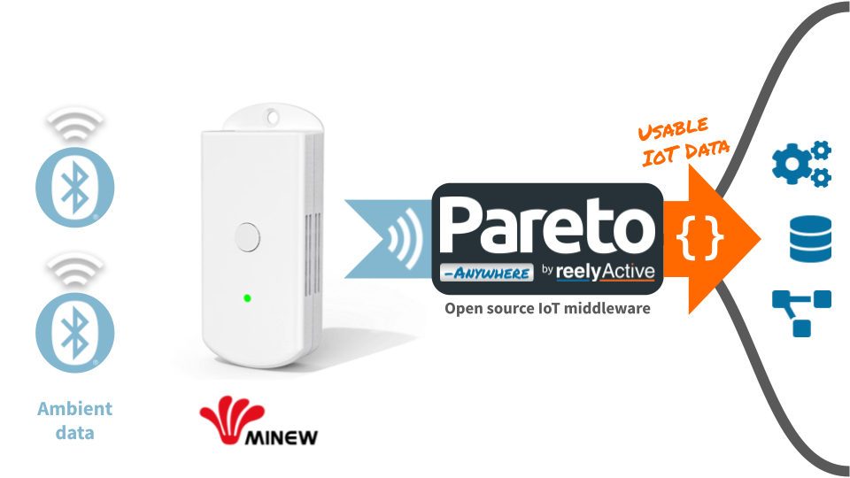

Configure a Minew MG7 Gateway
Our step-by-step guide to configure the gateway to forward data for processing by Pareto Anywhere.
The TL;DR (Too Long; Didn't Read)
Learn how we at reelyActive configure the gateways to enable interoperable IoT solutions
- What will this accomplish?
- The MG7 will forward ambient Bluetooth Low Energy packets to a server running Pareto Anywhere.
- What's Pareto Anywhere?
- Pareto Anywhere is open source IoT middleware that makes the data from just about anything usable.
- How long does this take?
- A MG7 can be configured in a few minutes when all prerequisites are in place.
Prerequisites
A Minew MG7 gateway and the MinewLink mobile app.
Connect over LAN Step 1 of 3
Connect to the MG7 with the MinewLink mobile app over the local area network (LAN).
- How to connect?
- The MG7 requires the MinewLink mobile app for configuration.
- Internet required?
- The MG7 can operate on both Internet-connected and isolated networks.
Connect mobile device to local WiFi network Part 1
Prepare the mobile device as follows:
- connect the mobile device to a WiFi network which is on the same local area network as the MG7 gateway
- enable Bluetooth and Location on the mobile device, as required by the MinewLink app
Power and connect the gateway using PoE Part 2
Power and connect the MG7 gateway as follows:
- connect the gateway to a Power over Ethernet (PoE) switch on the local network using a network cable
- observe the LED change to solid green if a connection is established, or blinking blue to indicate network configuration mode
The MG7 gateway can now be discovered by the MinewLink mobile app on the local network.
Discover in MinewLink app Part 3
Open the MinewLink app on the mobile device and complete the discovery as follows:
1 Select Gateways as the Device Type and then select the MG7 from the list.
2 Confirm that the gateway is powered and connected (from Part 2) and select the Device List menu icon at top right.
3
Select Discover Device from the list of options.
Retry as often as necessary: gateway discovery may take time.
4 Select OK to acknowledge the pop up once the device is detected.
Observe the configurable gateway in the list following discovery.
Keep the MinewLink app open to complete the gateway configuration in Step 2 below.
Configure data capture and forwarding Step 2 of 3
Configure the MG7 to forward data to a local server running Pareto Anywhere.
- How is data forwarded?
- The MG7 supports MQTT and HTTP. HTTP POST is natively supported by the barnowl-minew module of Pareto Anywhere.
- Which data format?
- JSON Long. Unlike other Minew gateways, this is the default and sole option.
Configure data forwarding Part 1
Connect following discovery (from Step 1 above) in the MinewLink app on the mobile device and complete the configuration as follows:

1 Select the target gateway from the Device List.
2 Select Configure Gateway to begin configuration.
3 Select HTTP as the Server Setting.
4
Enter the URL of the Pareto Anywhere server
For testing, use http://xxx.xxx.xxx.xxx:3001/minew replacing the x with the IP address of your computer on the WiFi network.
5
Customise the Bluetooth Low Energy scanning and filtering settings if required.
The default settings are ideal for common use cases.
6 Update the Other Settings, if required, specifically the Time Zone and Time Server (ex: pool.ntp.org) to the local region.
7 Select Confirm to write the configuration to the gateway.
8 Select Restart to remotely restart the gateway for the configuration to take effect.
9 Select OK to confirm the remote restart of the gateway.
Observe the configured gateway in the Device List.
Observe data in Pareto Anywhere Step 3 of 3
Run the Pareto Anywhere open source middleware to observe the forwarded data.
- How to run Pareto Anywhere?
- We provide friendly tutorials to install on a laptop, a Pi, etc.
- Is there a quick and dirty way?
- Yes. Our barnowl-minew package provides a simple means to receive gateway data and log to the console (see below).
Observing data in Pareto Anywhere requires no additional action if an instance based on the pareto-anywhere package is running, or, for quick-and-dirty validation, run barnowl-minew as described below.
If a Pareto Anywhere installation based on the /pareto-anywhere package is already present and running on the target computer on the host network, the data forwarded by the gateway should be available in both the web apps and APIs.
-
Run Pareto Anywhere on a PC
Install and run Pareto Anywhere on a personal computer to make sense of things.
-

-
Run Pareto Anywhere on a Raspberry Pi
Install and run Pareto Anywhere on a Pi to make sense of things.
To quickly validate that data is correctly received on the target computer on the host network, it is possible to run /barnowl-minew standalone to listen for HTTP POSTs on port 3001 as follows:
git clone https://github.com/reelyactive/barnowl-minew.git cd barnowl-minew npm install npm start
If the gateway is correctly configured and at least one Bluetooth Low Energy device is advertising in range, raddec data should appear in the console.
Enjoy the real-time data stream
Our cheatsheet details the raddec and dynamb JSON output from the Pareto Anywhere open source middleware.
-

-
Developers Cheatsheet
"Owl" you need to know about Pareto Anywhere's core data structures.


Tutorial prepared with ♥ by jeffyactive.
You can reelyActive's open source efforts directly by contributing code & docs, collectively by sharing across your network, and commercially through our packages.Where to next?
Continue exploring our open architecture and all its applications.
-

-
Directory of Devices
Browse all device configuration tutorials and development guides.
-

-
reelyActive Developers
Browse all developer documentation and tutorials.
-

-
reelyActive
Together, let's make sense of things.